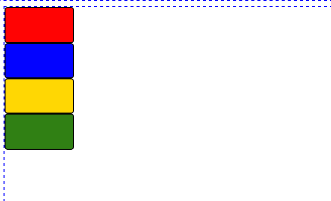
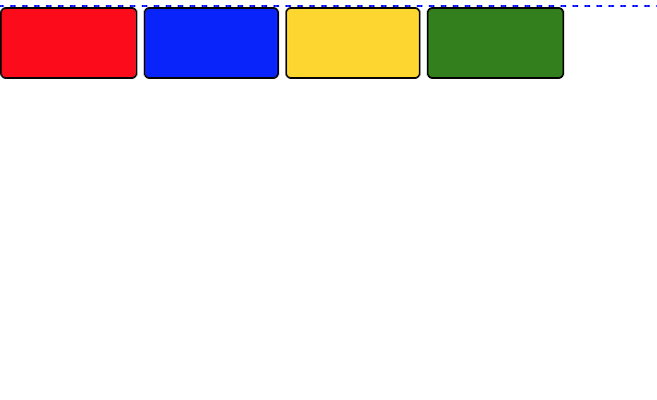

Inline with CSS
Exploring the differences between display inline vs inline blocks in CSS
May 11, 2015
A potentially confusing concept when learning about positioning with CSS is the subtle similarities and differences between what it means to display inline versus inline blocks. To begin with, inline elements respect right and left margins and padding, but not top and bottom. They cannot have a set height and width. An inline element has no line break before or after it, and it allows other HTML elements to sit to its left and right.
By contrast, block elements respect all margins and padding, left, right, top and bottom. They also force a line break after the block element. A block element has some whitespace above and below it, and it does not allow any other HTML elements next to it. The following is an example of elements with set height and width displayed as blocks:
Finally, an inline-block element is placed as an inline element (i.e. on the same line as adjacent content), but it behaves like a block element. Inline-block elements respect top and bottom margins and padding. They allow other elements to sit to their left and right, and they respect height and width. Displaying elements as inline-blocks will cause them to appear as in the image below.
